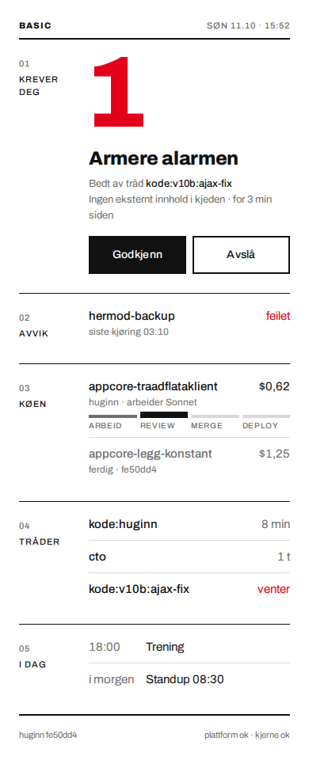
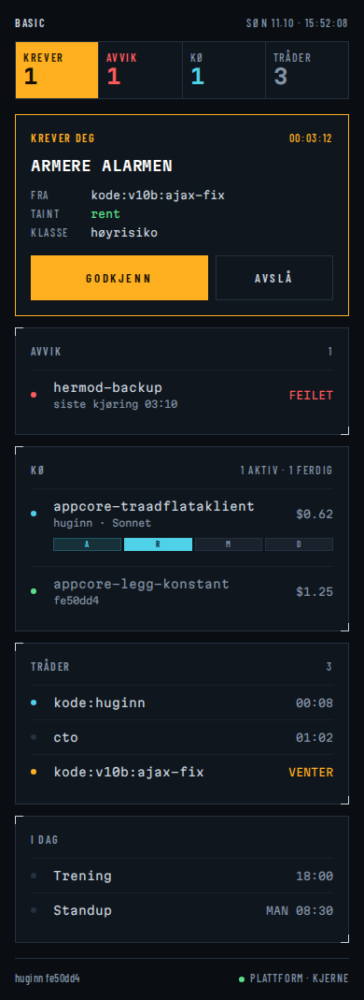
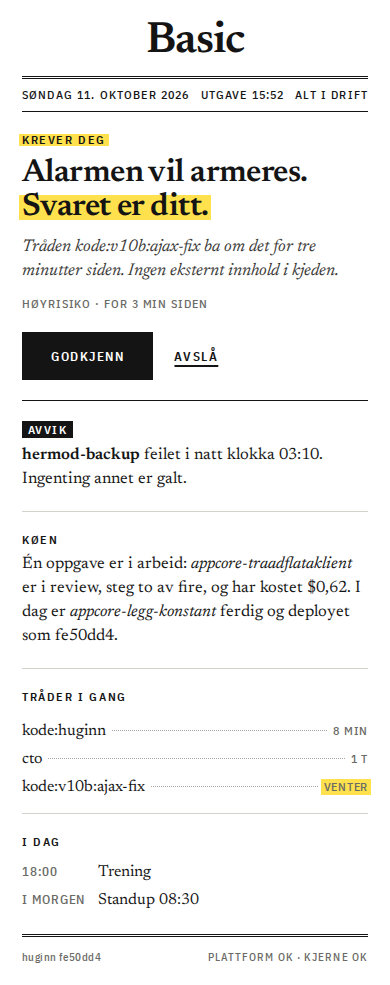
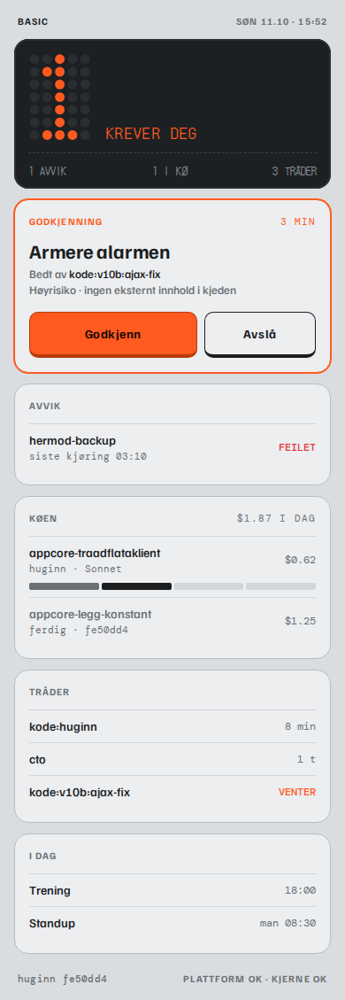

Samme skjerm og samme innhold i alle fire, bare tradisjonen er byttet. Regelen fra plattformen gjelder overalt: farge betyr avvik eller «krever deg», resten er dempet. Trykk på et bilde for å åpne den levende HTML-en.

Typografi: Archivo alene. Farge: hvitt og sort, ett signalrødt.
Signatur: tallet er statusen. «1» i 128 px; en rolig dag er et grått «0».

Typografi: Martian Mono + Barlow Condensed. Farge: blåsvart; ravgult = krever deg, cyan = pågår.
Signatur: annunciator-stripa øverst lyser bare når noe har en grunn. Køens fire steg er fire segmenter.

Typografi: Newsreader + IBM Plex Sans Condensed. Farge: hvitt og sort, uthevingstusj-gult for «krever deg».
Signatur: «Nå» som en kort briefing: køen og dagen er setninger, akkurat det en talsperson kan lese opp.

Typografi: Familjen Grotesk + DM Mono + punktmatrise. Farge: kjølig grått, oransje = krever deg.
Signatur: LCD-avlesning øverst, moduler under, knapper med kant under som ser ut til å kunne trykkes inn.